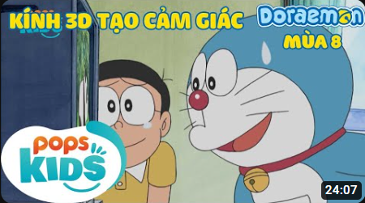
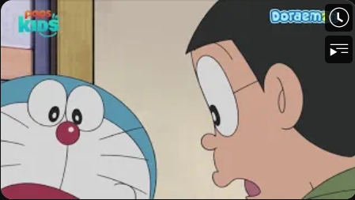
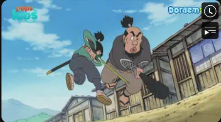

Kính 3D Tạo Cảm Giác, Máy Thay đổi Vũ Trụ
Vương Quốc Thú Cưng Của Ichi Hình Thành Liên Kết
Nobita Đấu Với Musashi

Doraemon là một nhân vật hư cấu trong bộ truyện tranh Nhật Bản và loạt phim hoạt hình cùng tên được tạo ra bởi Fujiko F. Fujio, bút danh của nhóm viết Hiroshi Fujimoto và Motoo Abiko. Doraemon là một chú mèo máy không tai, du hành ngược thời gian từ thế kỷ 22 để giúp đỡ một cậu bé mười tuổi tên là Nobita.
-Biệt danh: Mèo Ú (người thân)
-Chiều cao: 129,3 cm
-Bí danh: MS-903 (Mã hiệu)
-Người tạo: Fujiko Fujio